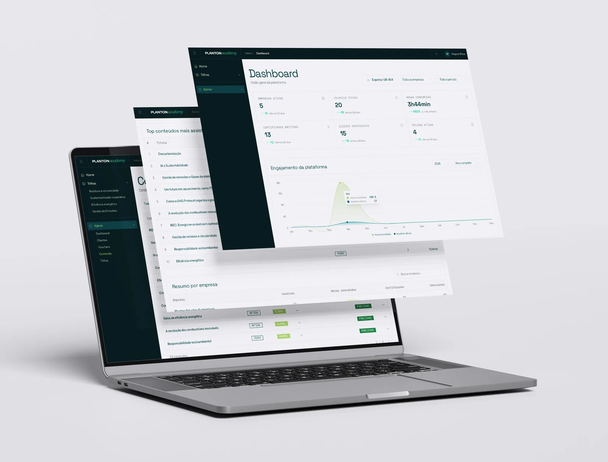
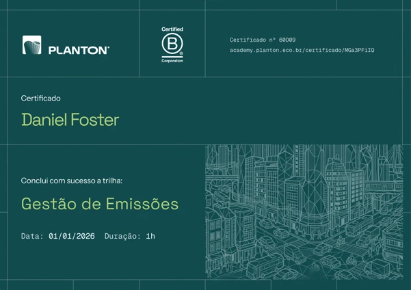
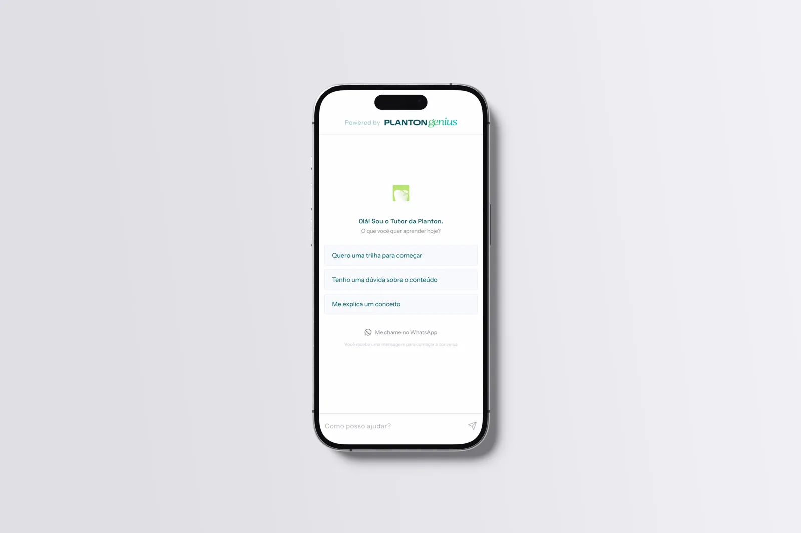

Planton Academy: o design de uma plataforma de educação corporativa, de ponta a ponta
2026 · Case Study · 5 min de leitura · Read in English
Liderei o design deste produto de ponta a ponta: o UX, o design system e o front-end em React rodando em produção. A interface do vídeo abaixo é o meu código, entregue junto do time de engenharia, não um protótipo jogado por cima do muro. O Planton Academy é onde essa forma de trabalhar se juntou.
- Papel
- Senior UX / Product Designer
- Período
- 2026 – Presente
- Time
- Único designer, ao lado de um pequeno time de engenharia
- Responsabilidades
- Product Design UX UI Design System Front-end React Motion Workflow assistido por IA
O que este projeto demonstra
- Estratégia de produto a partir do modelo de negócio
- UX para sistemas complexos e multi-perfil
- Arquitetura de informação
- Design systems escaláveis
- Colaboração próxima com engenharia
- Front-end em React em produção
- Desenvolvimento de produto assistido por IA
- Entregar produtos, não só protótipos
O Academy é a plataforma de educação corporativa da Planton, uma climate tech brasileira, e treina equipes de empresas em ESG: inventário de emissões, GHG Protocol, mercado de carbono, relatórios de sustentabilidade. Entrei para transformar um modelo comercial em um produto funcional, e fiquei perto dele do primeiro fluxo ao código em produção.
3 perfis de usuário sobre uma mesma base de dados · onboarding B2B com 12 estados · certificação condicionada a quiz · tutor de IA com transbordo humano · entregue como código React funcional
O Produto
O Academy é B2B e atende clientes enterprise reais. A Faber-Castell, cliente que a Planton divulga publicamente, usa a plataforma para treinar sua cadeia de valor. Não existe cadastro avulso: a empresa contrata o acesso, e qualquer pessoa com e-mail corporativo de um domínio autorizado entra. Tratei essa única regra comercial como a semente de todo o design.
Aluno, gestor e admin trabalham sobre os mesmos dados, cada um com um trabalho diferente. O aluno segue trilhas, passa por quizzes e conquista certificados verificáveis. O gestor da empresa acompanha o engajamento e comprova internamente o valor do treinamento. O admin da Planton opera todos os clientes, o catálogo de conteúdo e os vouchers de acesso. O que o gestor vê é um recorte do que o admin vê em agregado: uma base de dados, três produtos.

Meu Papel
Traduzi o modelo comercial em fluxos (onboarding, funil de certificação, ciclo de vida dos planos, a arquitetura de três perfis) e desenhei todas as telas sobre o Planton UI, o design system baseado em tokens que construí para a marca e estendi onde o produto exigia. Depois implementei a plataforma em React, Next.js e TypeScript, então as telas do vídeo acima são a interface real funcionando, não mockups. Também desenhei a linguagem de movimento, a experiência do tutor de IA e publiquei a landing page que vende o produto.
Processo
- Discovery
- Arquitetura de Informação
- UX Design
- Design System
- Implementação em React
- Lançamento
Quatro decisões que moldaram o produto
1. O onboarding começa pelo modelo de negócio
Como o domínio corporativo é a chave de acesso, o fluxo verifica o domínio antes de pedir qualquer senha, então a elegibilidade é resolvida no passo mais barato possível. Cada cenário comercial virou uma tela própria: empresa ativa celebra e avança sozinha; empresa inativa recebe um caminho de voucher com uma saída comercial; domínio desconhecido converte o visitante em lead de vendas. Doze estados, e nenhum deles é um beco sem saída.
2. A certificação é a espinha dorsal, não a recompensa
Em vez de esconder o certificado atrás do curso, fiz dele parte do currículo: quiz e certificado aparecem como itens numerados na lista de conteúdo da própria trilha, visíveis desde a primeira aula. Cada etapa bloqueada diz exatamente o que a desbloqueia, e reprovar no quiz sempre leva de volta ao conteúdo. O certificado carrega uma URL pública de verificação e um botão de compartilhamento no LinkedIn. É uma credencial que o aluno distribui, e que divulga a plataforma para a rede dele.

3. Um tutor de IA que conhece os próprios limites
O tutor responde em blocos estruturados que sempre terminam apontando para o próximo conteúdo do catálogo. Ele serve ao funil de aprendizagem, não à conversa aberta. Quando o bot chega ao seu limite, um toque transfere a conversa para um humano no WhatsApp, levando um resumo do chat para que o aluno nunca precise se repetir. Desenhar a saída foi tão importante quanto desenhar as respostas.

4. Gestores renovam contratos, então gestores veem resultados
Na educação B2B, o aluno usa o produto, mas é o gestor quem renova. O dashboard do gestor foi construído para prestação de contas interna: vigência do contrato como linha do tempo, horas de engajamento, certificados conquistados e drill-down por colaborador. Os mesmos dados da visão do admin, reorganizados em torno de um trabalho a ser feito diferente.
Desenhado em código
Todos os fluxos acima existem como código React tipado. O onboarding é uma máquina de estados em TypeScript; o quiz e o ciclo de vida dos vouchers também. Os menus do admin só oferecem ações válidas para o estado atual de cada item, então a interface aplica as regras de negócio em vez de apenas documentá-las.
Trabalhar dentro do código compartilhado mudou a forma como as decisões de design viajam. Componentes que nascem dentro de uma tela são promovidos para o registro do design system, cada um documentado com exemplos vivos e o caminho real do arquivo-fonte, para que um desenvolvedor vá da documentação à implementação em um clique. Revisando os pull requests com os engenheiros, eu conseguia pegar um problema de espaçamento ou de estado no próprio diff, em vez de numa thread de comentários.
Agentes de IA tinham uma função específica em cada etapa do processo. Na exploração, eu conseguia levantar três ou quatro variações funcionais de um fluxo em uma tarde e compará-las no navegador, em vez de debater mockups estáticos. Na implementação, os agentes montavam a base dos componentes sobre os tokens do design system enquanto eu focava nos detalhes de interação e nos casos extremos. Na documentação, cada componente promovido ao sistema ganhava docs de uso rascunhadas a partir do código-fonte real. E na validação, uma decisão tomada de manhã podia ser testada contra estados reais de dados no mesmo dia.
Como o design system foi construído → leia o case complementar
Resultados
- Uma experiência coerente em toda a plataforma
- As áreas de aluno, gestor e admin compartilham tokens, primitivos e padrões, incluindo dark mode completo e sem código de tema por tela.
- Um design system que sobreviveu ao projeto
- O Planton UI hoje atende outros produtos da Planton, com releases versionados e documentação viva.
- Menos atrito entre design e engenharia
- Como o design é entregue em código, não existe lacuna de handoff nem desvio entre protótipo e produto: a especificação, a documentação e a interface entregue são o mesmo artefato.
A ressalva honesta: a plataforma roda sobre dados estruturados de exemplo, e a acessibilidade está coberta onde os primitivos do sistema cobrem, com um backlog priorizado para as partes customizadas. Instrumentar o uso real e fechar esse backlog seria meu primeiro movimento depois do lançamento.
Por que este projeto importou
Este projeto reuniu quase todas as competências que desenvolvi ao longo da carreira: UX, produto, design system, motion, front-end e IA. Durante boa parte dessa trajetória, elas viviam em etapas separadas, sob responsabilidade de pessoas diferentes. Aqui, tive a chance de segurá-las em um único par de mãos.
O que tornou o projeto importante para mim foi menos a plataforma e mais a distância que ele encurtou. A lacuna entre uma decisão de design e o código rodando em produção é onde a maior parte da qualidade de um produto se perde. Trabalhar de ponta a ponta me deixou reduzir essa lacuna de forma deliberada, e é assim que quero continuar trabalhando.